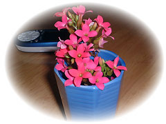

| ..*..*.. 2003年11月22日(土) 晴れ ..*..*.. 咲き続けるカランコエを切って、ときどき部屋の中に生けます。3週間くらい持ちます。 さて、この写真は10月の終わりくらいに撮りました。うちのハーブたちは、夏の間、ずっと直射日光に当たっていました。ちょっと暑すぎるかな、という気がしたけど、木箱の置ける位置が限られていたので、どうも日陰には移しませんでした。 夏の初めに網の棚を買いました。ここには別の種類のハーブを育てようと計画してたんだけど、何をするかは考え中のまま、そのままにしていました。 があるとき思い立ち、木箱のハーブたちを、この網棚に移しました。この方が直射日光が当たらなくて元気みたい。
さて、今はあいてる木箱、何を植えるか考えてるとこです。だいたい決まりました。楽しみです(^^) 過去の記録-+-** ハーブ観察記録-1--2003.6.1 ハーブ観察記録-2--2003.7.20 ハーブ観察記録-3--2003.8.10 |